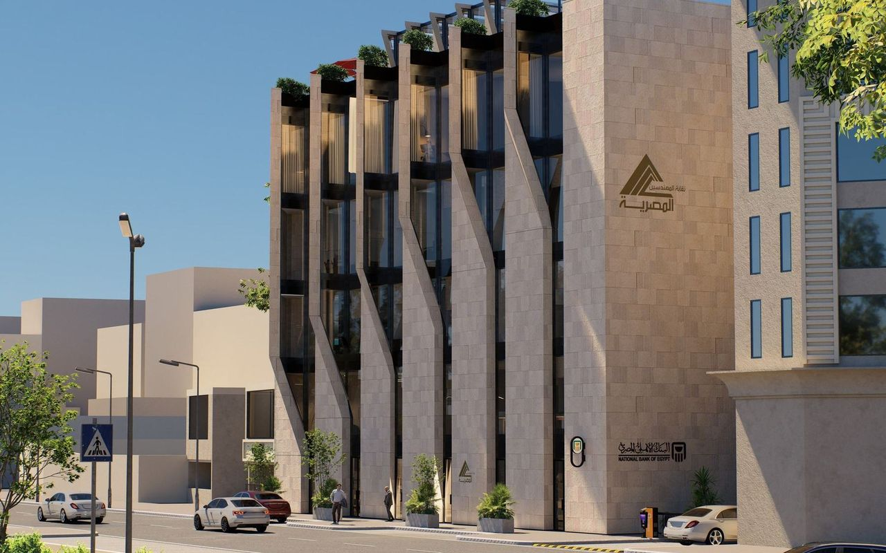

A multi-use building on Ali Ibn Abi Talib Street in Luxor with a bank branch, syndicate services, offices and halls, and investment and hotel units. The ADD team's entry won First Prize.

Project
Location
Luxor, Egypt
Result
First Prize
Team
ADD
Role
Architectural drawings
My role
Developed and refined the architectural plans during the design phase.
Prepared the tender drawings after the win, turning the competition design into coordinated technical documentation.
Drawings
Selected sheets and images
Select any image to enlarge it.
Site context on Ali Ibn Abi Talib Street, between the Nile corniche and the urban fabric of Luxor.Ground floor with the bank and main lobby.First floor with syndicate services around the atrium.Second floor offices and halls.Fourth floor investment and hotel units.Section through the central atrium.Section through the stair core with its folded red feature.The building at dusk. Render by the ADD team.Facade study of the folded stone fins.Pattern study for the stone cladding, against Egyptian references.Street view along the Syndicate frontage.Folded stone panels shade the recessed glazing.Plan zoning around the central atrium.Exploded 3D zoning of the multi-use building.Vertical circulation cores beside the atrium.User journey: separate entrances share the central atrium.Multi-use spaces for elections, exhibitions, workshops and job fairs.Programme by floor.
Renders and presentation diagrams by the ADD team.